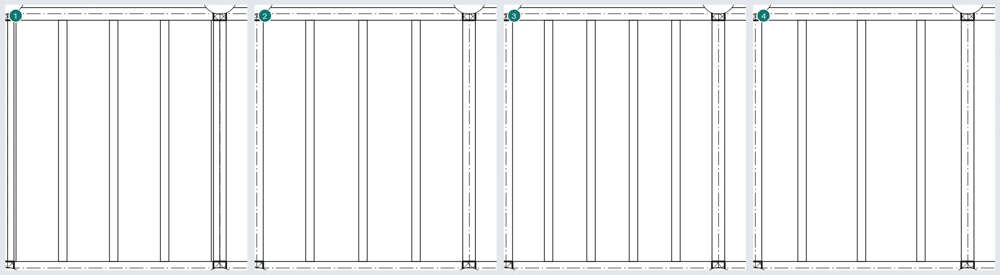
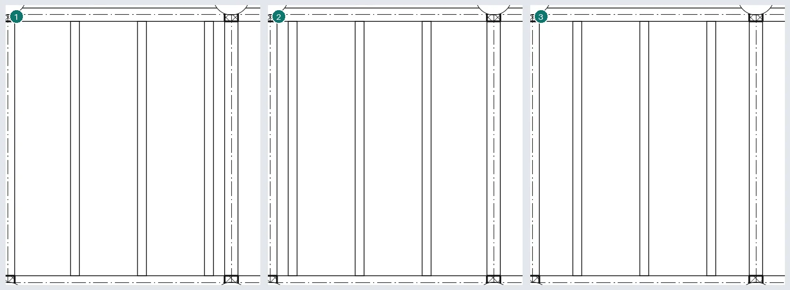
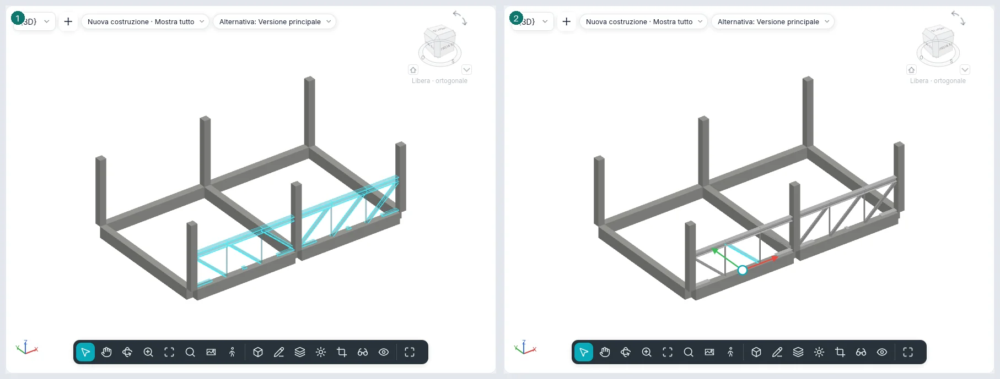
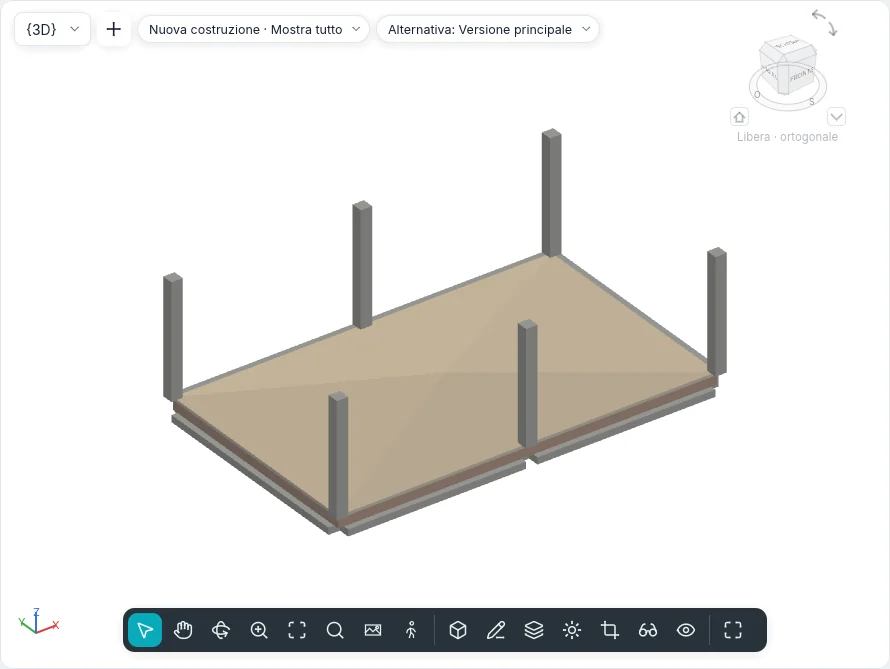
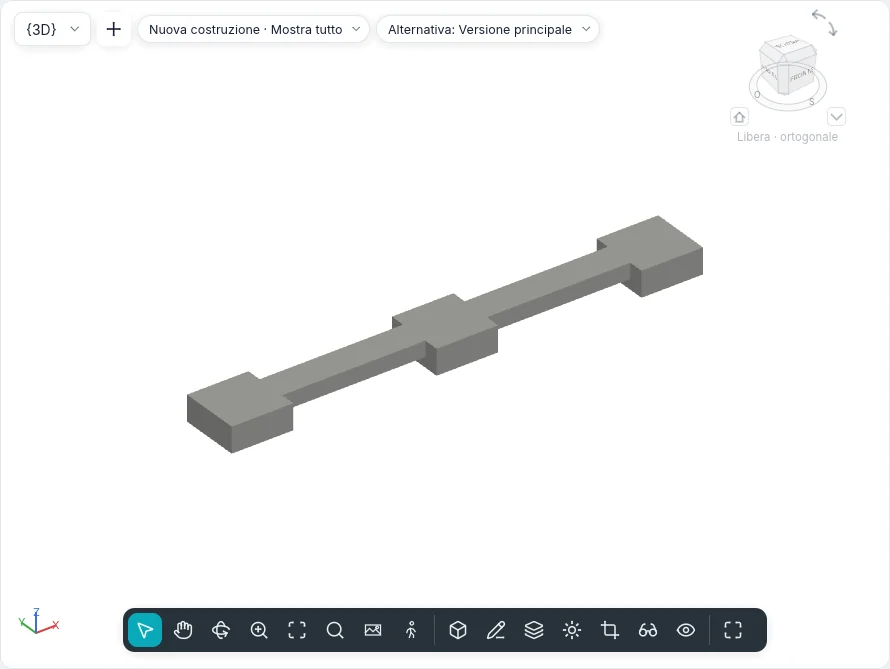
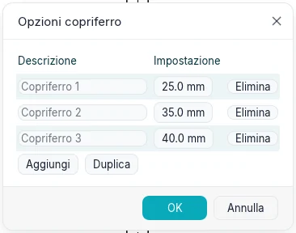
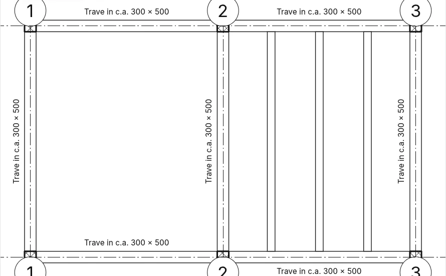

Strutture e fondazioni
La scheda Strutture (nello stile BIMopen: Crea ▸ Strutture) raccoglie gli elementi che portano l'edificio: travi, controventi, orditure di travi, travature reticolari, muri e solai strutturali, pilastri, plinti, fondazioni continue e platee. Travi, controventi e le aste delle travature sono una sola categoria, Telaio strutturale; plinti, fondazioni continue e platee sono Fondazioni strutturali. Gli stessi strumenti funzionano nelle piante, nelle sezioni e nei prospetti e nelle viste 3D, dove la vista lo consente.
Tipi di telaio strutturale
I tipi di trave e di controvento sono sezioni parametriche di BIMopen, come quelle dei pilastri. Forma di sezione sceglie la forma: Rettangolare (calcestruzzo o legno), Circolare, Doppio T (anche con ali diverse e ali inclinate), Tubolare rettangolare, Tubolare circolare, Angolare, Profilo a C (anche con orlo) e Profilo a T. Parametri del tipo mostra solo le quote della forma scelta e calcola in sola lettura le proprietà di Analisi strutturale: area, perimetro verniciabile, peso nominale (dalla densità del materiale), momenti d'inerzia, moduli elastici e plastici, costante torsionale e di distorsione, aree di taglio e angolo degli assi principali. Chiave nome sezione conserva il nome del profilo commerciale.
Un progetto nuovo ha travi in calcestruzzo armato, i profili IPE, HEA, HEB, UPN, angolari, a T, tubolari e travi in legno lamellare.
Trave
Strutture ▸ Trave apre la scheda Posiziona trave. Due clic fanno una trave: le estremità si agganciano al centro dei pilastri, all'asse dei muri portanti, alle estremità e alla linea di altre travi e alle intersezioni delle griglie, e la barra di stato dice a cosa. La barra delle opzioni ha:
| Opzione | Che cosa fa |
|---|---|
| Piano di posizionamento | Il livello della vista, su cui si posa la trave |
| Utilizzo strutturale | |
| Snap 3D | Le estremità si agganciano agli elementi strutturali fuori dal piano di lavoro: una trave inclinata |
| Concatena | La fine di una trave è l'inizio della successiva; Esc termina la catena |
| Etichetta al posizionamento | Ogni trave nasce con la sua etichetta |
Multipli ▸ Su griglie: clicca le griglie e Fine (o Invio); su ogni griglia nasce una trave per campata fra i supporti che la incrociano. Un muro che sta sulla griglia non riceve travi; le travi che ci sono già non si raddoppiano.
In una sezione o in un prospetto la trave si disegna nel piano della vista, con le estremità sugli elementi strutturali cliccati; in 3D sul livello sotto il cursore, o con Snap 3D sull'elemento.
Proprietà della trave
| Gruppo | Proprietà |
|---|---|
| Vincoli | Livello di riferimento, Piano di lavoro, Offset livello iniziale e finale (una trave inclinata), Orientamento (Normale, Orizzontale), Rotazione trasversale |
| Posizione geometrica | Estensione iniziale/finale (estremità libere), Taglio giunto iniziale/terminale (estremità unite, acciaio e legno), Giustificazione YZ (Uniforme o Indipendente), Giustificazione Y/Z con i loro Valore di offset, anche per inizio e fine |
| Materiali e finiture | Materiale strutturale |
| Strutturale | Utilizzo strutturale, Posizione simbolo bacchetta, Tipo di associazione, Distanza associazione e pilastro di riferimento (superiore o inferiore) per ogni estremità, Connessione iniziale/finale (Telaio momento, Momento asta), Dimensione curvatura, Numero di montanti, Alloggio finale trave su un muro strutturale, Peso massimo, Peso esatto, Area verniciata |
| Quote | Lunghezza sistema, Lunghezza del taglio, Volume, Quota altimetrica parte superiore e base («Varia» su una trave inclinata) |
| Analisi strutturale | Rilascio inizio/fine (Incastro, Cerniera, Momento flettente, Definito dall'utente con i sei vincoli), Analizza come |
Una trave selezionata ha Inverti estremità e, per ogni estremità, Impedisci giunto.
Come si vede
- Basso: una linea, con lo stile di linea del suo utilizzo (Stili per categoria ▸ Telaio strutturale ▸ Trave primaria, Travetto, Arcareccio…), staccata dai pilastri e dalle travi che unisce della Distanza del simbolo di taglio. In sezione e in prospetto anche le travi sono linee, con i simboli di momento.
- Medio e Alto: il contorno della sezione. In una pianta con Disciplina «Strutturale» le travi coperte da un solaio sono tratteggiate; in una pianta «Architettonica» non si vedono.
- In sezione la trave è tagliata con il retino del suo materiale.
Giunti
Una trave si ferma alla faccia del pilastro e del muro portante su cui poggia (mai a un muro non portante); fra travi il giunto è a squadra (la trave che passa resta intera) o d'angolo fra due travi dello stesso tipo nello stesso piano. Il calcestruzzo diventa una massa sola: il pilastro vince sulla trave, i solai e i muri tengono la loro forma, e una trave sotto un solaio in calcestruzzo si ferma alla sua faccia inferiore.
Strutture ▸ Telaio ▸ Giunti trave/pilastro mostra una freccia a ogni estremità unita: verso il giunto, quella trave è tagliata; un clic la inverte. La barra delle opzioni filtra per materiale (Acciaio, Legno, Calcestruzzo prefabbricato, Altro).
Controvento
Strutture ▸ Controvento:
- in un Prospetto telaio (o in una sezione), due clic su elementi strutturali, per esempio la base di un pilastro e una trave;
- in pianta, con Livello iniziale, Offset, Livello finale, Offset della barra delle opzioni;
- in 3D, sui punti degli elementi cliccati.
Un'estremità posata su una trave resta associata a un Rapporto (da 0 a 1) o a una Distanza lungo di essa, dall'inizio o dalla fine: se la trave si sposta o si allunga, il controvento la segue. Utilizzo strutturale: Controvento verticale, Controvento telescopico, Anima, Altro.
Simboli in pianta e Impostazioni strutturali
Strutture ▸ Telaio ▸ Impostazioni strutturali imposta, sulla carta:
- la Distanza del simbolo di taglio di controventi, travi e travature, pilastri;
- i Simboli per controvento: Linea parallela (con il suo offset) o Linea con angolo, Mostra controvento soprastante e sottostante (anche tratteggiati), Simbolo controvento telescopico;
- i Simboli di connessione di travi e controventi.
I simboli si vedono al livello di dettaglio Basso.
Orditura di travi
Strutture ▸ Orditura di travi riempie una campata di travi parallele:
- Orditura automatica: un clic in una campata chiusa da travi o muri portanti;
- Disegna orditura: il contorno nella modalità schizzo (Crea contorno orditura) con Seleziona supporti (il contorno resta legato alle travi e ai muri cliccati, e il primo dà la direzione), Linea, Rettangolo, Seleziona linee e Direzione trave. Un anello interno è un'apertura.
Regola di layout: Distanza fissa, Numero predefinito, Spaziatura massima, Spaziatura di sgombro; con le prime e l'ultima, Giustificazione (Inizio, Fine, Centro, Asse direzione). Tipo di trave, Quota altimetrica ed Etichetta al posizionamento (un'etichetta dell'orditura o una per trave) completano le opzioni.
Le travi seguono i supporti quando si spostano. Un'orditura selezionata ha Reimposta sistema (le travi cambiate tornano all'orditura) e Rimuovi orditura (l'orditura sparisce, le travi restano).
Le regole di layout spaziano le travi come la Serie spazia le copie: Numero predefinito come Ultimo, Distanza fissa come 2° a partire dalla Giustificazione; con Spaziatura di sgombro la distanza è fra le facce, e una trave di un tipo più grande allontana le vicine. 3D nella barra delle opzioni rende l'orditura non piana: le estremità delle travi salgono ai supporti che definiscono l'inclinazione (le travi sempre, i muri con Definisce l'inclinazione o Inclinazione definita muri). Modifica contorno riapre lo schizzo; Direzione trave si disegna o si sceglie con Seleziona linee. Una trave eliminata a mano resta eliminata fino a Reimposta sistema. Fuori da una campata chiusa, Orditura automatica apre lo schizzo del contorno.
Le regole di layout spaziano le travi come la Serie spazia le copie: Numero predefinito come Ultimo, Distanza fissa come 2° a partire dalla Giustificazione; con Spaziatura di sgombro la distanza è fra le facce, e una trave di un tipo più grande allontana le vicine. 3D nella barra delle opzioni rende l'orditura non piana: le estremità delle travi salgono ai supporti che definiscono l'inclinazione (le travi sempre, i muri con Definisce l'inclinazione o Inclinazione definita muri). Modifica contorno riapre lo schizzo; Direzione trave si disegna o si sceglie con Seleziona linee. Una trave eliminata a mano resta eliminata fino a Reimposta sistema. Fuori da una campata chiusa, Orditura automatica apre lo schizzo del contorno.


Un'orditura copiata, specchiata o incollata si associa alle travi e ai muri portanti su cui cadono i suoi bordi nella nuova posizione; se un bordo non trova un supporto il comando lo avvisa, e Modifica contorno ▸ Seleziona supporti lo associa di nuovo. È meglio copiarla solo tra campate con la stessa forma e gli stessi supporti.
Anche travi curve e muri portanti curvi chiudono una campata per l'orditura automatica, ma la direzione delle travi viene sempre da un supporto diritto. Un'orditura disegnata su più campate si crea comunque, con un avviso: le travi e i muri che la attraversano non la dividono, quindi è meglio un'orditura per campata.
Travatura reticolare
Strutture ▸ Travatura reticolare: due clic in pianta stendono lo schema del tipo (Pratt, Howe, Warren, Warren con montanti, Fink) sulla luce. I correnti sono travi, le aste sono controventi, ognuno del tipo del suo gruppo (Aste correnti superiori, Anime con montanti, Anime con diagonali, Aste correnti inferiori). Le proprietà comprendono Altezza trave reticolare, Asta corrente portante, Larghezza massima pannello, Numero di pannelli e la rotazione.
Una travatura selezionata ha Associa parte superiore/inferiore (il corrente segue la faccia di un tetto o di un solaio strutturale; con Maiusc il corrente inferiore), Dissocia superiore/ inferiore, Reimposta trave reticolare e Rimuovi travatura reticolare (le aste restano travi e controventi).
Modifica profilo apre una sezione o un prospetto parallelo alla travatura (se la vista aperta non lo è, Vai a vista chiede quale) con le linee dei correnti in modalità di modifica: le linee sopra la metà sono il corrente superiore, le altre l'inferiore, e le aste di parete li seguono. Reimposta profilo riporta i correnti alla linea dello schema. In una vista 3D le linee si disegnano direttamente sul piano della travatura, senza cambiare vista.
Con Seleziona linee la travatura si piazza lungo una trave, un muro o una griglia. Un clic su un'asta seleziona tutta la travatura; Tab passa alla singola asta. Un corrente associato segue la faccia dell'ospite per tutta la luce; se è associato il corrente portante, l'altro ne mantiene l'Altezza trave reticolare, e il profilo disegnato resta e torna con Dissocia superiore/inferiore. Giustificazione verticale portante, Offset non portante, Orientamento anima (Ortogonale: i montanti a squadra col corrente portante) e Angolo di rotazione (il piano della travatura ruota attorno alla linea di posizione) cambiano le aste. Un'asta eliminata a mano resta eliminata fino a Reimposta trave reticolare; il taglio delle aste si regola solo in Impostazioni strutturali. Gli schemi nuovi disegnati in un componente proprio arriveranno con l'editor dei componenti.
Con Seleziona linee la travatura si piazza lungo una trave, un muro o una griglia. Un clic su un'asta seleziona tutta la travatura; Tab passa alla singola asta. Un corrente associato segue la faccia dell'ospite per tutta la luce; se è associato il corrente portante, l'altro ne mantiene l'Altezza trave reticolare, e il profilo disegnato resta e torna con Dissocia superiore/inferiore. Giustificazione verticale portante, Offset non portante, Orientamento anima (Ortogonale: i montanti a squadra col corrente portante) e Angolo di rotazione (il piano della travatura ruota attorno alla linea di posizione) cambiano le aste. Un'asta eliminata a mano resta eliminata fino a Reimposta trave reticolare; il taglio delle aste si regola solo in Impostazioni strutturali. Gli schemi nuovi disegnati in un componente proprio arriveranno con l'editor dei componenti.

Con Le anime presentano simboli di taglio nel tipo della travatura, a dettaglio basso le aste di parete si fermano prima dei correnti, alla Distanza del simbolo di taglio dei controventi delle Impostazioni strutturali.
Muro strutturale e solaio strutturale
Muro strutturale è lo strumento Muro con gli stessi tipi e la stessa barra delle opzioni: il muro nasce Portante. Ogni muro ha Strutturale e Utilizzo strutturale (Non portante, Portante, Parete a taglio, Strutturale combinato).
Solaio strutturale è il pavimento con Strutturale spuntato. Nello schizzo Direzione orditura disegna la direzione della sua orditura; alla fine il simbolo di direzione orditura nasce al centro del solaio. Annotazioni ▸ Direzione di orditura lo rimette (con Posizionamento automatico al centro); selezionato si ruota, e Allinea perpendicolare lo rende perpendicolare a un bordo, a una trave o a una griglia.
Modifica della forma
Un pavimento selezionato (strutturale, una platea o un pavimento qualsiasi) ha il pannello Modifica forma:
- Modifica elementi secondari: clicca un angolo o un punto, poi scrivi la sua Quota altimetrica nella barra delle opzioni; Del toglie il punto.
- Aggiungi punto: un punto dentro il pavimento, alla quota indicata; con Relativa la quota si somma a quella della superficie in quel punto.
- Aggiungi linea di divisione: due clic; la superficie si piega lungo la linea.
- Seleziona supporti: clicca una trave sotto il pavimento; nasce una linea di divisione lungo la trave, alla sua quota superiore.
- Reimposta forma: toglie punti e linee, il pavimento torna piano (o con la sua inclinazione).
La parte superiore diventa la superficie a triangoli che passa per questi punti; tutta la lastra la segue e mantiene il suo spessore. Quota altimetrica parte superiore e Quota altimetrica base mostrano allora Varia.

Fondazioni
| Strumento | Come funziona |
|---|---|
| Plinto | Un clic in pianta o in 3D (barra spaziatrice: ruota), oppure Sulle griglie o Sotto i pilastri e Fine. La faccia superiore sta al livello più Offset di altezza; il pilastro sopra si appoggia al plinto. Sposta con griglie lo lega alle griglie |
| Fondazione continua | Un clic su un muro strutturale: la fondazione corre sotto la sua base e lo segue. Portante: Larghezza ed Eccentricità; Zoppo: Larghezza lato esterno e interno. Si interrompe sotto porte e finestre che toccano la base, salvo Non interrompere agli inserti; agli estremi liberi sporge della Lunghezza di default estensione finale |
| Platea | Il contorno nella modalità schizzo (Crea contorno platea), come un pavimento: sta sotto il suo livello, giù dello spessore dei suoi strati. Utilizzo strutturale: Fondazione o Solaio di fondazione |
Selezionata una fondazione continua, i cerchi pieni alle estremità la allungano o la accorciano lungo il muro, con lo snap ai riferimenti vicini; lo stesso fanno i cerchi alle estremità di una trave o di un controvento. Su travi in acciaio, calcestruzzo prefabbricato e legno, le frecce oltre le estremità cambiano Estensione iniziale/finale se l'estremità è libera, Taglio giunto iniziale/terminale se è unita. Plinti e fondazioni continue in calcestruzzo che si toccano formano un'unica massa: il plinto conserva la sua forma e taglia la fondazione continua (tra due plinti, quello fatto prima taglia l'altro), e in pianta non si disegna la linea tra loro.


Copriferro armatura
Cemento armato ▸ Opzioni copriferro elenca i copriferro del progetto, ognuno con un nome e una distanza: Aggiungi, Duplica, Elimina. Gli elementi che usavano un copriferro eliminato prendono il primo. Muri strutturali, pilastri, travi e controventi in calcestruzzo, solai strutturali, platee, plinti e fondazioni continue scelgono il loro copriferro in Proprietà: Copriferro armatura - Superficie superiore, Copriferro armatura - Superficie inferiore e Copriferro armatura - Altre superfici (sui muri Copriferro armatura - Superficie esterna, Copriferro armatura - Superficie interna e Copriferro armatura - Altre superfici).

Viste, etichette, abachi e IFC
- Disciplina di una vista: Architettonica o Strutturale. La seconda nasconde i muri non portanti e tratteggia ciò che i solai coprono.
- Annotazioni ▸ Etichette travi: etichette del telaio e quote altimetriche su tutte le travi della pianta (o su quelle selezionate) in sei posizioni, sopra e sotto, all'inizio, al centro e alla fine; Visualizza quota altimetrica sceglie superiore, inferiore, entrambe o effettiva.
- Un'etichetta di trave segue la trave e si mette al suo fianco, dal lato in cui non copre altre travi (sopra, se entrambi sono liberi); si trascina come ogni etichetta. In Etichette travi ▸ Impostazioni, Offset estremità orizzontale sposta le posizioni d'inizio e di fine verso il centro e Offset verticale allontana le annotazioni dal fianco della trave.
- Abaco/Quantità ha le categorie Telaio strutturale, Orditure di travi, Travature reticolari e Fondazioni strutturali, con tutti i parametri come campi.
- In IFC travi, travetti e arcarecci escono come
IfcBeam, controventi e aste comeIfcMember, le travature comeIfcElementAssembly, plinti e fondazioni continue comeIfcFooting, la platea comeIfcSlabdi base; muri e solai strutturali portanoLoadBearing.

Dalla riga di comando
| Comando | Che cosa fa |
|---|---|
beam |
Travi da due punti, in catena, ad arco o su griglie |
brace |
Un controvento fra due punti |
beamsystem, beamsystemedit |
Un'orditura automatica o da un contorno; reimpostala o rimuovila |
truss, trussedit |
Una travatura; associala, dissociala, reimpostala o rimuovila |
pad, strip |
Plinti (in un punto, sulle griglie, sotto i pilastri), fondazioni continue |
spansymbol, spanalign |
Il simbolo di direzione orditura; allinealo |
beamjoin, structuralsettings, beamannotations |
I giunti, le impostazioni strutturali, le etichette delle travi |
floorshape |
La modifica della forma di un pavimento: punti, linee di divisione, supporti, reimposta |
covers |
Opzioni copriferro |